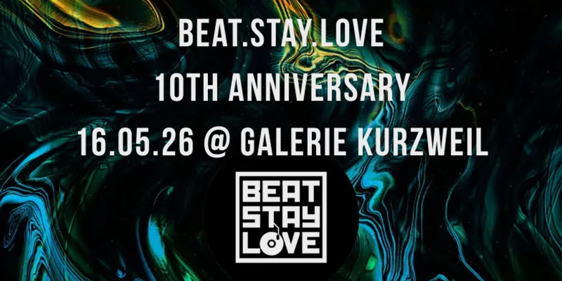
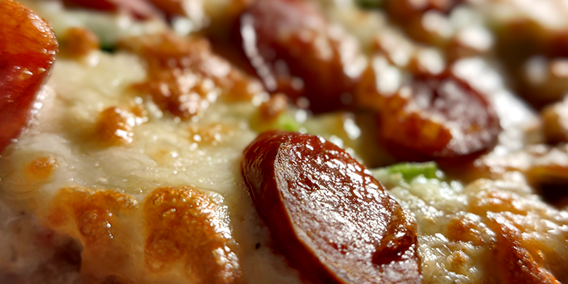
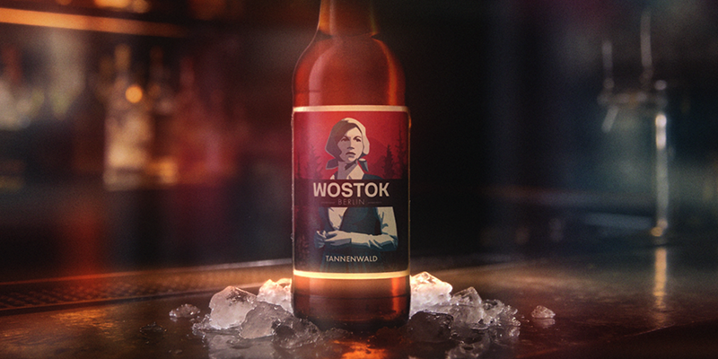

fuCk
realitaet

in der nacht auf den 17ten mai diesen jahres
feiert die bsl-crew ihr 10-jaehriges jubilaeum
im short-because.
und wie es der zufall so will,
ist das meine geburtstags-nacht.
christian peter wird 50
flucht
es waere wunderpraechtig wenn alle,
die auf keinen fall zeit haben,
relativ zeitnah bescheid geben koennten.
vll sind schon urlaube gebucht usw..
alle anderen .. geil.
falls ausreichend leutz am start sind,
gibts warmes essen, kalte longdrinks
und eine herzhafte ueberdosierung im
short-because mit anschliessender
nachtruhe bei der ansaessigen gendarmerie.
falls halt net, dann halt net..
infos meinerseits folgen nach erhalt
und auswertung der beteiligten stimmen.
agenda
die nun folgenden abschnitte befassen sich
mit den theoretischen stationen des abends
und allgemeinen informationen..
portal
satan hoechst persoenlich wird sich ab 6:66
bzw 19:06uhr um den einlass kuemmern.
natuerlich koennen aktuelle sexualpartner,
und auch solche die es vll mal werden wollen,
den abend gemeinsam mit dem poebel geniessen.
basis

langos wird am besagten abend ab 20:00uhr
im 5-minuten-takt aus satans brennendem arsch
direkt in euer maul geschissen.
ich baller noch ne angabe der zutaten
hier rein fuer alle allergikerinnen,
allergiker oder auch allergibraltar.
extra-wuensche koennen gerne geaeussert werden..
beim inder nebenan, von der eigenen couch aus.
mehl wasser hefe salz zucker pfeffer
tausendstel

die fortlaufende abendliche unterstuetzung
wird durch ein aktiv-dual-konzept
realisiert und zielstrebig gewaehrleistet.
zum einen durch einen kuehlen longdrink,
bestehend aus vodka-wostok-eis
und zum anderen regelt schmucker
wahnsinn
was nicht fehlen sollte, darf auch nicht fehlen..
fuer alles wird gesorgt sein!
reise
175 zigaretten spaeter..
die musikveranstaltung wird nach einem
kurzen spaziergang mit endlosem geschwaetz,
gegen eine mir unbekannte uhrzeit aufgesucht,
betreten und nicht ohne frisch gestochenes piercing
oder die jacke eines tuerstehers wieder verlassen.
sonderfall moana
aus gegebenem anlass wuerde ich dir
die ersten beiden langosen via express
direkt auf die couch liefern lassen.
entweder fertig gebaut fuer den eigenen ofen,
oder schon gebacken fuer den direkt-verzehr.
wie du wolle .. sachste einfach bescheid.
prost
16.05.2026 - 6:66pm